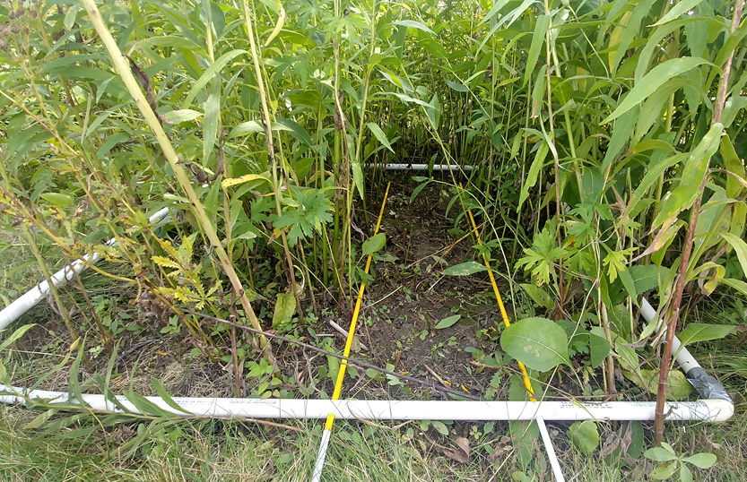

Research
My primary research interest is using basic ecology to advance the science and practice of ecological restoration. My dissertation has focused on using community assembly theory to understand a key process hindering restoration efforts: invasion. Management of invasive species is a drain on either time or resources for most restoration projects. The question I sought to answer was do native community characteristics predict invasion resistance? Community assembly theory predicts that maximizing niche space occupied by the native community should increase resistance to invasion. If true, this would provide a potential way to increase resistance to invasion by manipulating the seed mixes used in restoration projects. I investigated this question using multiple metrics of diversity incorporating species’ traits and evolutionary history. All of my disseration chapters were aimed at addressing this larger question across different study types (observational and experimental), scales, and time periods.

A 15-year observational study on diversity and invasion across Illinois
Leveraging the Critical Trends Assessment Program dataset, I investigated invasion dynamics in 150 sites across the state of Illinois. Through working with this dataset I was able to build my skills in working with a large scale longitudinal dataset. It allowed me to look at invasion both temporally and cross-sectionally and show that the time scale studied affects the direction of the diversity-invasibility relationship.
Experimental Tests of Phylogenetic and Functional Diversity
Two chapters of my dissertation leverage a larger experiment at the Morton Arboretum in Lisle, IL. The full experiment tests the effect of phylogenetic and functional diversity on restoration outcomes broadly, varying the phylogenetic and functional diversity of study plots by changing the composition of 15 species planted in each one. Within this full experiment, two treatments have been implemented: 1) intensive management, where initial composition is maintained to isolate the effect of diversity, and 2) restoration management where initial species composition is not maintained and invading species were primarily managed with fire, approximating a restoration site. My chapters take advantage of this experimental setting to conduct two invasion studies. This will provide insight into invasion dynamics across multiple stages, while addressing a part of the science-practice gap.

Effect of phylogenetic and functional diversity on resistance to background invaders
In this second chapter, I conducted an observational invasion study from 2017-2019, collecting species-level biomass from all 78 study plots. With this, I calculated diversity and quantified the abundance of each species. In these plots, we tried to manage the plots similarly to a restoration and hoped to capture invasion dynamics similar to those in restoration projects by allowing invaders to establish from the background.
Effect of phylogenetic and functional diversity on resistance to experimentally introduced invaders
In my third chapter, I experimentally introduced three invaders into our experimentally established communities which allowed me to track invaders individually and understand the invasion more mechanistically. As part of this chapter, I also experimentally invaded monocultures of each species involved in the treatment plots.